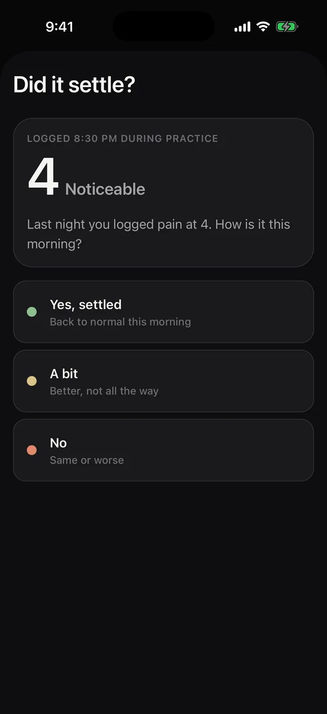
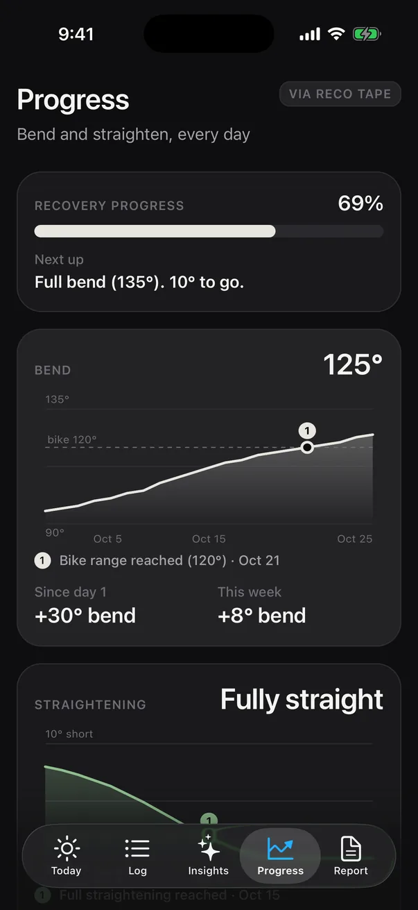
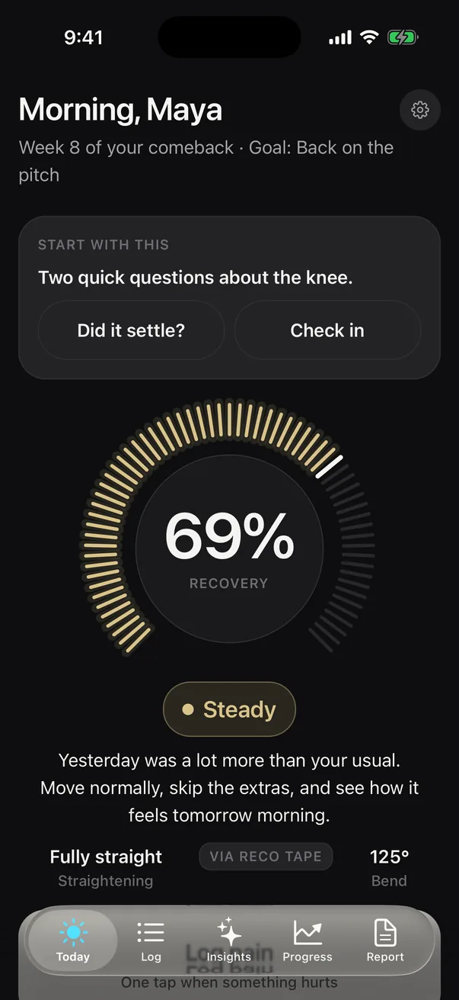
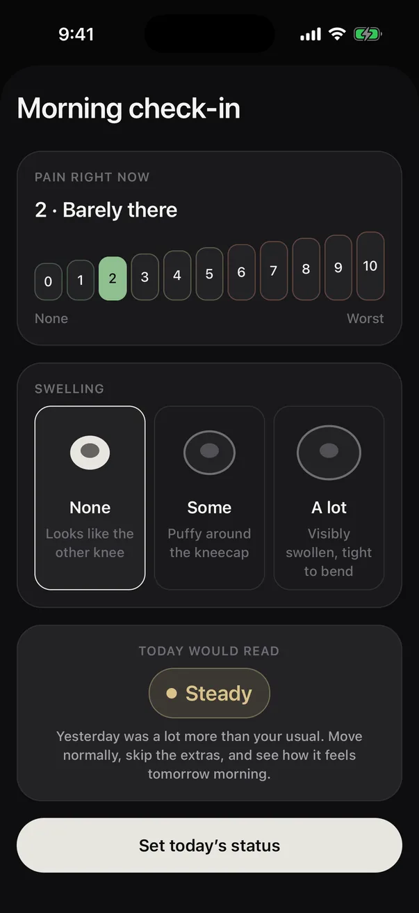
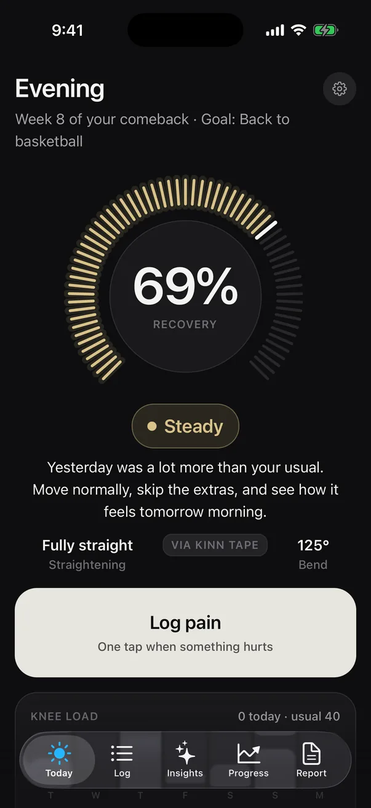
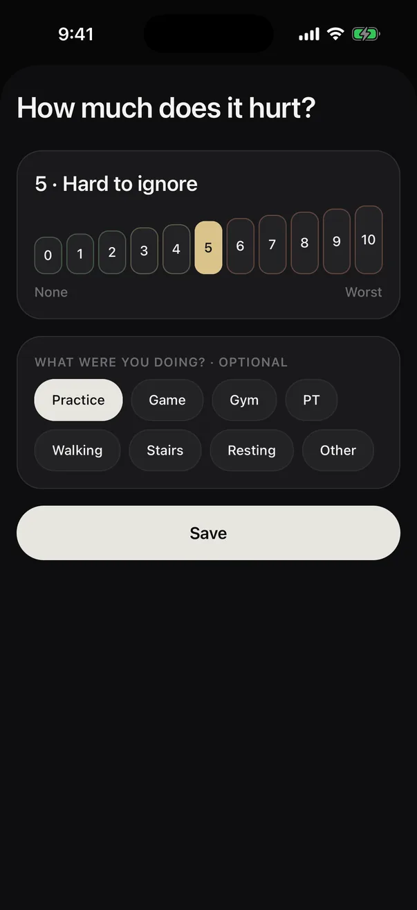
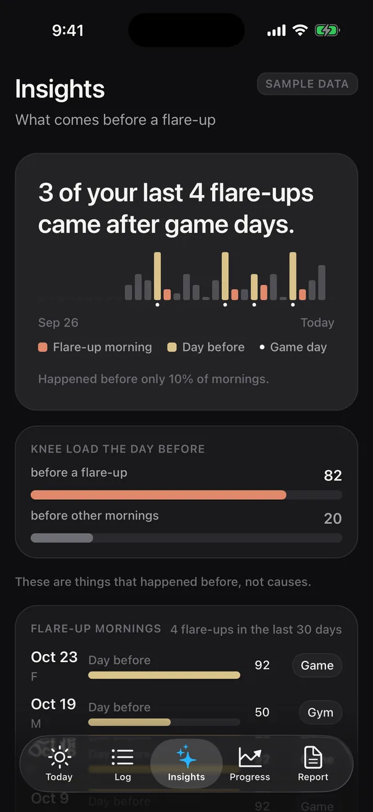
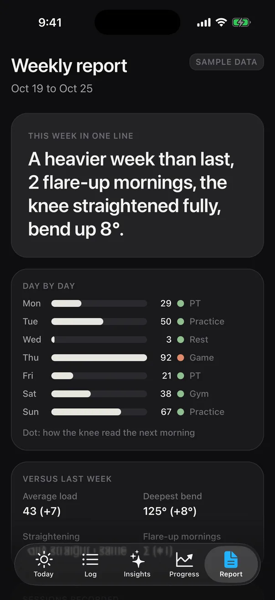
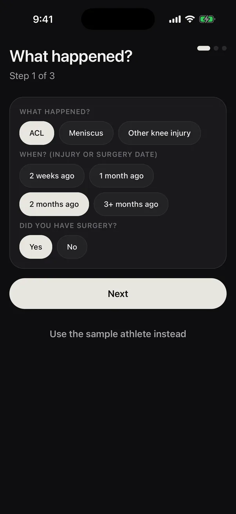
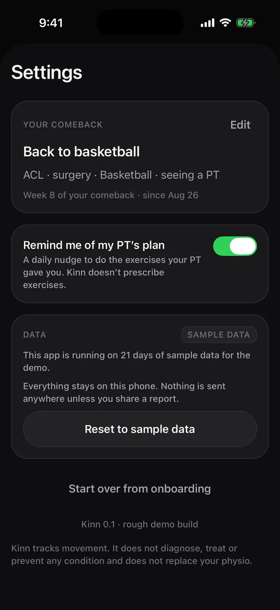

01 · Every morning
Two quick questions, before anything else.
If you logged pain yesterday, RECO asks whether it settled overnight. Then a thirty-second check-in. Both wait at the top of Today until you answer.
The app · as built, October 27, 2026
RECO is the app that comes with the tape. Every morning it asks two questions and gives the knee one status for the day. One tap when something hurts. By the weekend it can tell you what came before a bad morning. Every screen below is the real app, running on sample data.








Waits at the top until you answer Yesterday's status, until then Last night's log, with the time Three answers, no typing 0 to 10, with a word on it Shows the status before you commit Recovery, against your own usual One status for the day Straightening and bend, via the tape Tapping 5 reads “Hard to ignore” What you were doing, optional One sentence, from your own days Load the day before, vs other days Bike range reached, Oct 21 10° to full bend The week in one line Dot: how the knee read next morning01 · Every morning
If you logged pain yesterday, RECO asks whether it settled overnight. Then a thirty-second check-in. Both wait at the top of Today until you answer.
01 · Did it settle?
Pain that settles overnight is the kind you can keep training through. Yes, a bit, or no, and RECO answers back in one line.
01 · Morning check-in
A number with a word on it and swelling in three words. The sheet shows the status it will set before you commit.
02 · The call for today
A recovery dial, then one of three calls against your own usual, never a clinical threshold. Under it, today's straightening and deepest bend from the tape.
03 · When something hurts
Log pain is the only big button on Today. A number, what you were doing, done. Next morning the loop starts again with “Did it settle?”.
04 · What it learns
Three of your last four flare-ups came after game days. Things that happened before, not causes, with the knee load the day before set against other days.
04 · Progress
Range of motion day by day against the milestones: bike range, full bend, fully straight. Plus what you gained since day one and this week.
04 · Weekly report
One line for the week, each day with how the knee read the next morning, and the change versus last week. Share it when you choose.
05 · Yours
What happened, about you, what you are coming back to. Settings keeps your comeback in one line, a reminder for your physio's plan, and the data where it is. RECO tracks and shows; your physio makes the calls.


The same app, running on sample data. Walk the morning asks, log pain, read the week. The tape card on Today shows the sensor signal live: pair a RECO tape over Bluetooth in Chrome or Edge, or run the simulated tape.
The daily loop runs end to end on iOS and in the browser with a 21-day sample athlete. Next: the tape's readings feed the dial and replace the hand-typed log.
A thin-film sensor and a small Bluetooth coin on kinesiology tape. In the browser build you can pair one and see activation, reps and calibration live.
Pair a tapeRECO shows what your knee did and how it felt the next morning. It does not diagnose, treat, or clear anyone to play.